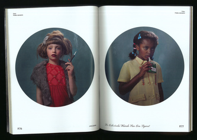
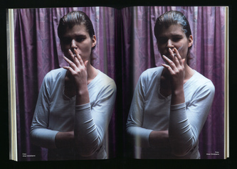
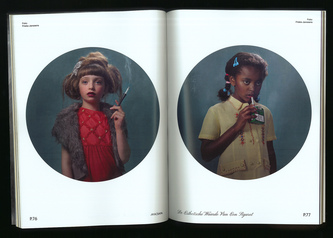
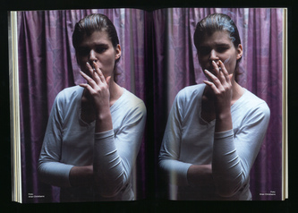

Celebrate the Progress
Graduation project 2020
Luca school of arts
Celebrating the progress and evolution in genetic medicine. A story on curing a genetic disease.
This is a very personal story because I was diagnosed with Cystic Fibrosis when I was 1.5 year old.
I tell my story with a concept album where I translated the progress in medical therapy in a visual and musical shape. An album based on the steps between the origin and a possible cure of this genetic defect. Every song is linked to an important step in the process to cure the disease.
The name of the album “How long would I live without …”, refers to the question I ask myself sometimes, “how old would I get without modern therapy and medical technologie?” When I explained my project in the hospital, they sayid that it is important to look at the whole process and progress made over the years and not only the therapy we know today.


Stir the Melting Pot
Two yearly magazine for Beeldende Vormgeving
Luca school of arts


SEINHUIS
Identity assignment
Luca school of arts


#my9favouritechords
A digital instagram expo where I made a graphic interpretation
of the feeling I get from playing my favorite piano chords.
Every chord has its own identity.
The shape changes in a way that describes the
particular mood I get from playing each chord.
I’ve also made a “song” playing all the chords in order.
You can check it if you click “Dm9” in the bottom row.
Nacht van de Verbeelding
Submission for the poster contest of "Nacht van de Verbeelding" (Night of the Imagination).
In collaboration with my class mates Sam DeKocker and Fabio Seminara. Typo by Vue.studio.
MACSAM
A 128-page long magazine about cigarettes. A tribute to the Macguffin magazine where
every issue is about one particular object.
I've always had a fascination for cigarettes and never understood why people smoke.
I saw this as the perfect moment for a deep dive in the wonderful world of the cigarette.
To be clear, I never smoked and I am not planning to do so.
This magazine is a rather critical and satirical view on cigarettes.
I took a look at how they still hold their importance in a modern society.
 



Liberté Egalité Fraternité
A visual interpretation of the motto of French revolution “Liberté, Egalité, Fraternité”
I've made a flag that says “LA GOUTTE D’EAU QUI FAIT DÉBORDER LE VASE”.
It explains that every little problem adds up and can be the last straw.

Het Theater Festival
Fictional identity for a yearly theater festival.
This Identity is based on the term “inleving” (empathy/immersion).
I found this term in how the public experiences a theater piece
and how an actor is able to play his role.
I tried to translate this in my typography by making a symbol font,
that is readable if you see the bigger picture.
Shakespeare
Poster series for three major plays by William Shakespeare.
I combined an optical illusion with the story of the play.
De storm:
(the tempest)
A theater piece that largely takes place on an island.
Een Midzomernachtsdroom:
(A Midsummer Night's Dream)
Three stories that run through each other.
Othello:
The most important object in the whole play is Desdemona's handkerchief.
Ni Hao
Visual identity for a fictional Chinese restaurant, centered around dating.
My identity is based on tangram, a traditional Chinese puzzle.
It refers in a way to love. There is always that piece that fits,
you just need find it at the right time.